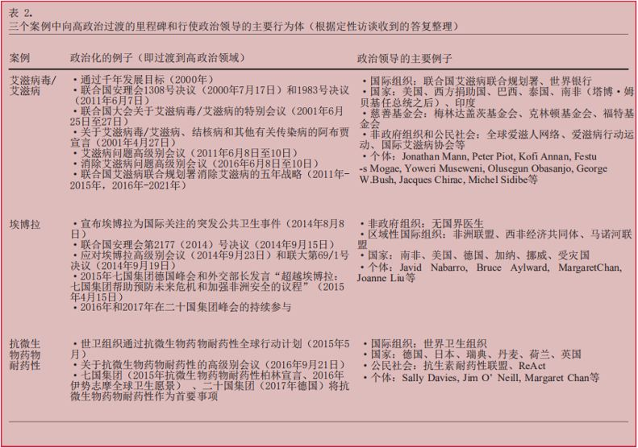

收录于合集

作品简介
【作者】
David Held，对于全球化、全球治理等国际关系理论界热议之问题具有相当深邃且独到的见解，既有以其所在学院为学术大本营的英国学派的治学之风，亦不囿于国际关系理论而在经济学、政治学等众多学科领域有所突破，是当之无愧的政治学家、全球化理论家。
Ilona Kickbusch，日内瓦高级国际关系学院全球卫生项目主任。她是全球备灾监测委员会(Global Preparedness Monitoring Board,GPMB)和世卫组织非传染性疾病高级别独立委员会的成员，也是2030年全民健康委员会的联合主席。
Kyle McNally，塔吉克斯坦和乌兹别克斯坦的无国界医生（Médecins Sans Frontières，MSF）区域宣传经理。他的工作重点是在两国宣传和交流以病人为中心的结核病和艾滋病护理模式。
Dario Piselli，日内瓦高级国际关系学院国际法博士候选人，国际环境研究中心研究员，主要研究以生态系统为基础的国际法保护方法、公私伙伴关系对实现可持续发展目标的贡献。
Michaela Told，日内瓦高级国际关系学院全球卫生项目执行主任。在进入学术界之前，她致力于各大洲的地方、区域和国际红十字与红新月运动。
【编译】 缪高意（国政学人编译员，中国社会科学院大学）
【校对】 叶扶疏
【审核】 丁伟航
【排版】 李佳霖
【来源】 Held, David, et al.“Gridlock, innovation and resilience in global health governance.” Global Policy 10.2(2019):161-177.
期刊简介
《全球政策》是一本创新的跨学科杂志，汇集了世界一流的学者和领先的实践者，旨在分析全球问题的公共和私人解决方案。2018年该杂志影响因子为1.197。
**全球卫生治理中的僵局、创新和适应力
**
Gridlock, Innovation and Resilience in Global Health Governance
内容提要
摘要
相较于全球治理的其他领域，全球卫生治理更具创新性和适应力。为理解促进全球卫生治理发展的机制，文章借鉴僵局（gridlock）的概念，以及元治理和适应性治理等其他理论流派，将全球卫生治理在日益困难的条件下适应多边秩序的过程概念化。全球卫生治理的显著创新是两个相互关联条件的结果。首先，诸如制度碎片化、日益增长的多极化等通常与多边合作僵局有关的进展，已经改变了全球卫生治理，而不是使其陷入僵局。其次，全球卫生治理的行为体往往能够把握变革路径所提供的机会。其中，三条重要的变革路径是：（1）在认识和实践之间有相当程度的组织学习和积极的反馈循环；（2）高度多中心的治理体系；（3）政治领导作为治理创新催化剂的作用增强。这些趋势是在艾滋病毒/艾滋病、2014年埃博拉疫情和抗微生物药物耐药性，这三个具有重大政治、社会和健康相关性的案例研究中讨论的。
政策启示
· 为重新确立其作为全球卫生治理核心机构的权威，世界卫生组织（WHO）不应试图将规范和技术职能与召集和领导职能分开。
· 考虑到目前和正在出现的大多数卫生挑战都需要超出卫生部门之外的行动，我们应扩展/加强有效的组织间协调机制，尤其将重点放在环境卫生和非传染性疾病等领域。
· 提高对卫生挑战的政治支持需要考虑这样做可能促进重大进展的条件。形成包容各方的联盟，围绕共同的目标和规范，联合起来把不同类型的行为体聚集在一起是非常有必要的。 · 包括多边发展银行和私人基金会在内的行动者的筹资策略，必须从纵向疾病规划逐渐转变为以加强卫生系统为目标，包括普遍的卫生覆盖、更加关注卫生的决定因素。
· 旨在促使发展中国家行为体接受全球卫生倡议的国际努力，必须辅之以其他手段，比如更加强调利用政治领导在国内创造所有权，以及填补许多国家仍然面临的持续执行能力的差距。
文章导读
一、引言 ****
全球卫生治理在 过去30年里经历了彻底的变革。从20世纪90年代开始，用于全球卫生的资金和行为体数量都开始呈指数式增长，这导致全球卫生方式、体系结构、机制和目标发生重大转变。全球卫生治理在几个区域和问题中取得重大成就。具体言之，取得了全球孕产妇和儿童死亡率下降，获得抗逆转录病毒治疗（HAART）的机会增加，对非洲疟疾的干预加强，以及根除多发性肠炎等持续进展。此外，全球卫生治理的扩张发生在全球政治格局发生重大变化的时候，有效地书写了全球卫生新时代。目前，我们可以看到几个趋势。第一，高收入国家仍然是全球重要卫生组织和倡议的主要资助者。但是，其中许多国家（特别是美国）反对外国援助的政治趋势，导致全球卫生筹资的未来越来越不确定。第二，中国、印度、巴西、南非和俄罗斯等中等收入大国的政治影响力和全球卫生支出也在逐步增长，这突出表明全球卫生治理中权力分配领域逐步而稳定的转变。第三，2015年9月通过的可持续发展目标（SDGs）为全球卫生治理带来了新的愿景，全球卫生治理从纵向关注特定疾病，转向更广泛地强调卫生体系和更全面的健康和福祉愿景。文章从理论上分析了过去三十年来全球卫生治理中日益困难的合作与变革路径，以及它们之间的相互作用。首先，文章借鉴僵局的概念，研究全球卫生治理的动态，以了解如何在卫生治理领域应用僵局的路径。其次，文章考虑其他的理论，特别是元治理和适应性治理理论，并评估全球卫生治理在多边秩序中面临僵局的潜在条件。为了做到这一点，文章选取三个具有重大政治、社会和健康相关性的案例。这三个案例也体现了不同类型的健康威胁，即艾滋病毒/艾滋病、2014年几内亚、利比里亚和塞拉利昂埃博拉疫情以及抗微生物药物耐药性（AMR，亦称抗菌素耐药性）。
二、研究方法 ****
本研究采用质性、混合的研究方法，围绕三个案例进行有组织、有重点的比较研究。鉴于艾滋病毒/艾滋病的复杂历史，以及它在使得公共卫生转变为真正的全球努力方面的关键作用，其被选为长期健康威胁的例子。相比之下，2014年埃博拉疫情代表着当代一场严重的卫生危机。从死亡人数和其他社会经济影响来看，埃博拉疫情造成的损失往往被视为全球卫生应急准备和应对能力持续不足的最明显迹象。最后，尽管人们对耐药性的担忧可以追溯到抗生素出现之日，但近几年，有关抗微生物药物耐药性的全球卫生治理倡议才变得尤为突出。因此，这里选择抗微生物药物耐药性作为“未来”卫生威胁的案例。预计在未来几十年中，随着抗药性的飙升，其直接和间接影响将逐步增加。
本研究以每个案例研究为出发点，通过界定和绘制构成各自治理环境的政策和政治环境，分析和追踪每个领域随时间变化的治理进程。在此基础上，通过桌面研究（文件审查和内容分析）和访谈（半结构化），探讨了与全球卫生相关的、特别是选定的案例研究的适用性，以及超越僵局的路径。作者根据三个案例研究中关键利益相关者的职位资历和对治理历史的直接参与程度，对他们进行了深入（半结构化）的访谈。这些访谈是在2016年10月至2017年7月期间进行的。研究中选定机构的理事机构编写的主要文件，包括（但不限于）：世界卫生组织（WHO）、联合国艾滋病联合规划署（UNAIDS）、全球抗击艾滋病、结核病和疟疾基金(GFATM)、国际药品采购机制、联合国大会（UNGA）和七国集团/二十国集团（G7/G20）。这些文件是在各机构的资源数据库中收集的。随后，作者对访谈和主要文本进行定性内容分析，主要将重点放在三个主题上：（1）每个案例研究的关键治理挑战；（2）对这些挑战的僵局和非僵局解释；（3）创新和学习的路径，其中重点关注全球卫生治理的创新和适应性特点，这些特点可能是有助于克服僵局的根本条件。
**三、不断变化的结构背景：
**
**** 僵局的路径及其对全球卫生治理的影响
在发展僵局理论时，赫尔德（David Held）等人发现各国越来越无力解决跨国政策问题。赫尔德特别指出了四个相互作用的趋势： 多极化加剧、更复杂（更困难）的问题、 制度惰性 和碎片化。 · 多极化的加剧可能与中等收入国家作为全球治理新的、强有力的参与者有关。在全球卫生领域，这导致了捐助国和受援国之间传统区别的减少。随之而来的挑战是如何在不同世界观和政治利益的广泛行动体之间达成共识； · 困难问题的概念抓住了一个时代在更大范围和更大复杂性下的卫生挑战。这个新时代的特征是全球化加速，特别是人口和信息的跨境流动、商品和服务的消费和生产，以及负面的环境外部性； · 制度惰性尤指对世界卫生组织和其他形式的机制的路径依赖。这些路径依赖导致许多人质疑世界卫生组织在全球卫生体系中的作用，包括缺乏果断的领导力、会员国利益的转移，逐步减少其预算内分摊会费的比例和政策进程失灵； · 碎片化指一个日益密集的制度性生态系统的负面影响。多年来，该生态系统未能建立有效的协调机制，导致交易成本增加、资源竞争加剧、大国和其他行为体继续共同影响全球卫生议程。初步看来，文章的结论证实了这样一个观点： 全球卫生治理不可避免地受到 全球化的潜在力量和僵局理论所描述的复杂相互依赖的影响。 然而，调查结果也提供了另外两个重要的考虑因素。首先，并不是所有僵局路径在全球卫生治理的演变中都扮演了同样重要的角色。其中，受访者相对强调了多极化和碎片化的趋势和全球卫生结构的迅速变化，其特点是：（1）权力分配的变化和（2）多中心、网络化治理形式的兴起。其次，文章的研究结果表明，这些路径为全球卫生治理带来了挑战和机遇。 1. 全球卫生多极化的挑战与机遇 一方面，文章发现，日益增长的多极化确实会对国际卫生合作产生负面影响，使多边决策的传统难题更加复杂。随着其政治影响力的增长，中等收入国家在治理进程中产生了更大的影响力，特别是在保护其新兴产业或强大部门方面。另一方面，日益增长的多极化也导致了新的国家倡导者出现。这些倡导者的不同利益倾向反过来导致其对卫生问题采取更具包容性的办法，并最终推动全球卫生治理在更多领域的进展。 **2. 全球卫生行为体和场所的碎片化：解决办法还是问题？**在全球卫生领域，过去三十年内一系列新的、多样的行为体和场所的激增是有据可查的。我们在访谈中对这一趋势给出了相应的解释。第一，全球卫生制度的激增常常被认为是一种积极现象，是减轻20世纪90年代开始广泛出现的观点的一种路径，这种观点认为世卫组织充满惰性、能力不足甚至内部完全僵化。第二，关于更普遍的全球卫生治理，一些访谈提及世卫组织成员国的政治偏好所发挥的作用。部分受访者认为激增的部分原因是西方传统捐助国有意识地采取战略，限制和削弱世卫组织的授权，以保持他们对全球卫生融资的更大控制，并建立垂直的、问题导向的“自愿联盟”。第三，在三个案例研究中，受访者都指出碎片化更为中性的方面，即人们越来越认识到卫生挑战固有的多维性，以及之后全球卫生治理部门的扩展。碎片化本身可以被视为对挑战的一种回应，包括多边体系的关系和卫生问题的艰难本质。第一，建立包括公私伙伴关系、产品开发伙伴关系、筹资机制和双边倡议等新的制度和治理安排，被认为是治理创新的例子。这些治理创新可以应对制度的路径依赖、改变国家的优先事项、经济增长、社会和政治变革以及捐助者的自满。第二，也有人强调，对任何单一制度没有能力或授权处理的复杂问题作出多元化的反应，对推动治理进程是必要的。第三，虽然有时被批评为碎片化的症状，但场所的拓展（如联合国大会、八国集团/七国集团以及最近的二十国集团和金砖四国论坛）使得全球卫生问题被优先考虑、讨论和谈判。同时，这也被认为是使政治势头和促进卫生问题向最高级别的政治考虑过渡的催化剂。当拓展的场所引领不同行为体在一系列共同的目标或规范下联合起来时，这一作用尤为明显。最后，正是因为它不可避免地导致缺乏科学性和协调性，碎片化本身成为变革的驱动力，为治理创新、组织间融合、有效行使管理权和加强政治领导创造了持续的需求和空间。
四、全球卫生治理的创新
与变革路径 ****
文章强调三个在适应性治理学术研究中众所周知，而在全球卫生治理背景下仍相对未知的特征：（1）在认识和实践之间有相当程度的组织学习和积极的反馈循环；（2）高度多中心的治理体系；（3）政治领导作为治理创新催化剂的作用增强。
1. 学习过程在治理创新中的作用 一般来说，全球卫生领域的治理创新实例主要可分为以下四类：（1）建立新的制度和治理安排，如公私伙伴关系、协调机制、混合治理联盟和双边倡议，以应对联合国系统的不连贯性和惰性；（2）现有和新的机构内部的制度创新，以应对路径依赖、捐助者自满、资金竞争、国家优先事项转移、缺乏合法性、问责制和突发性卫生危机；（3）概念创新提供了全球卫生行为体可以联合的总体框架、目标或概念；（4）全球卫生行为体在国家层面促进公共部门创新，其目标是建设能力和精简行动，以便作出更有效的反应。基于访谈和主要文本的发现，表1提供了这些治理创新形式的部分示例。
虽然这两种趋势并不总是相互依存的，但许多创新可以以不同的方式链接到自我反思性学习过程。自我反思性学习过程发生在全球卫生治理制度内部和各制度之间，包括专家和从业人员的职业流动。虽然这些过程并不局限于全球卫生领域，但在这一领域中尤为突出。认知社会（通常是以疾病为基础）在形成全球卫生论争方面发挥着重要作用，认知社会和实践社会之间正在形成非常活跃的反馈循环。一方面，在文章的三个案例研究中，机构内创新和新制度的创建往往是正式学习过程的结果。另一方面，全球卫生治理更广泛的特点是在多个层面不断进行知识创造和网络学习。其中，专家论述在发展共同理解，强调组织间融合和混合联盟建设重要性的元治理规范方面特别有影响力。当然，全球卫生系统作为一个整体似乎特别具有适应性，但这并不意味着全球卫生治理的所有创新都是适应性治理进程的结果。 2. 利用多中心的好处 全球卫生治理变革的 第二个重要途径涉及 机构 、市场和网络在多大程度上不是孤立运作，而是作为高度多中心治理 机制 的一部分。 多中心性是适应性治理体系的另一个关键特征。一方面，复杂性和相互依赖的挑战需要制度多样性、部分重叠管辖权和功能冗余，以缓冲失败和外部冲击。另一方面，复杂性和相互依赖的挑战还需要一套共同的理解、目标和规范。这些理解、目标和规范能够引导行为体和网络走向预期的社会结果。文章发现，全球卫生治理在这两个维度上都表现出多中心性，尽管程度不同。高度多中心的治理体系可能存在弱点，因为它增加了交易成本，并导致行为体之间缺乏协调，甚至引发行为体之间的矛盾。有趣的是，在我们的采访中，多中心性并不一定是负面的。相反，一些受访者强调，对有效性和卫生结果的关注往往掩盖了对效率和一致性的考虑，这与学术界对全球卫生治理的既定关注相反。换句话说，全球卫生行为体似乎已经接受了多样性和冗余性。因为这不可避免地成为在二十一世纪提供全球公共产品的手段。从这个角度看，两种交织的因果机制脱颖而出。首先，多中心性意味着，制度多样性可以部分缓解世卫组织内部、其他多边体系的惰性。第二，多中心性使全球卫生治理更具包容性。新的声音和观点蜂拥而至，这不仅影响各国和多边机构的议程，而且还影响到制定挑战的方式。 3. 政治领导政治领导被认为是适应性治理体系的一项额外关键要求。因为政治领导提供了包括建立信任、联系行为体、建立伙伴关系和动员对变革的支持在内的关键职能。通过案例研究，文章不仅发现，克服治理挑战的路径往往可以理解为与卫生问题日益政治化有关，而且政治领导往往是卫生问题向最高级政治过渡的催化剂。从这个角度来看，政治化和政治领导越来越被认为是克服全球卫生治理僵局的先决条件，特别是通过以下方式：（1）促成国际社会能够团结起来支持治理创新的临界点；（2）维持政治势头以面对相互竞争的优先事项、不断变化的议程和捐助疲劳；（3）提高某些被忽视的卫生危机的曝光度，并引起人们对边缘化群体、权力不平衡和不公正的关注。表2总结了我们案例研究中最常见的政治化和行使政治领导的情况。

传统的理解是，政治决策和技术专长可以（而且应该）彼此隔离。而当前与之相背的重大转变，对全球卫生治理有何影响？文章的发现表明三个重要因素。第一，如上所述，政治领导不仅仅适用于国家和政府首脑。在许多情况下，多边机构及其高级管理人员，甚至也包括非政府组织、公民社会组织、慈善基金会、高级专家、实践者和倡导者，他们都在卫生问题向高级政治转变方面起到推动作用。第二，政治领导及其行使的目的（如提供资金、推动问责、支持治理创新、增强卫生部门以外的势头）不可避免地受到领导人不同利益的影响。因此，在21世纪的全球卫生辩论和谈判中，要强调多元化和包容性的重要性。 最后，或许也是最重要的，在一个多中心的全球体系中，政治领导的重要性越来越大。 这似乎与对世卫组织作为世界上就卫生问题召开会议、确定优先事项、谈判和制定规则的主要舞台的管理职能的新期望有关。随着应对卫生挑战的解决办法变得多方面和多部门化，越来越多的人要求世卫组织指导、协调和激励全球卫生界，包括加强其在更广泛的全球政治格局中定位卫生利益的能力。
五、结论
我们正处于一个“新的世界卫生时代”的开端。这个时代的特征不是出现走向僵局的线性趋势或卫生状况改善，而是突然的变化和日益增长的不安全感。首先，走出全球卫生治理僵局的路径往往为治理创新和适应创造机会，但这也意味着它们在应对这里讨论的三种健康威胁方面造成了挑战。其次，许多受访者强调了只是部分被僵局理论所引起的路径的重要性，特别是在以下方面：（1）确保从卫生发展援助（DAH）平稳而有效地过渡到更大的国家所有权和更好地调动国内卫生资金；（2）继续从纵向的、针对特定疾病的治理方式转变为侧重于全民卫生保险和提供全球公共卫生产品的方式。从这个角度看，文章所强调的适应和创新进程可能正在进入一个新的阶段。在这个阶段，它们的局限性将进一步扩大并受到更多的质疑。首先，传统的全球卫生行为体和网络之间的持续治理创新本身无法应对日益复杂的多部门挑战，这些挑战需要卫生部门以外的体系变革。第二，为了使全球卫生体系能够在新出现的卫生问题上行使其管理职能，必须在努力争取国家行为体支持的同时，更加强调利用政治领导在国内层面创造所有权，以填补许多国家仍然面临的持续执行和能力差距问题。最后，在新民族主义倾向兴起、自由主义衰退和权力分配迅速变化的背景下，我们必须评估当前出现的日益包容的治理进程和不断传播的共同目标规范的两种趋势。《2030年可持续发展议程》通过三年后，多边主义背景不仅出现了巨大变化，而且将继续遭受一个重大破坏和复杂交织的危机阶段。这是迄今为止全球卫生治理适应能力面临的最具挑战性的考验。
_ ** _ ** _ ** _
本文由国政学人独家编译推荐，文章观点不代表本平台观点，转载请联系授权。**__